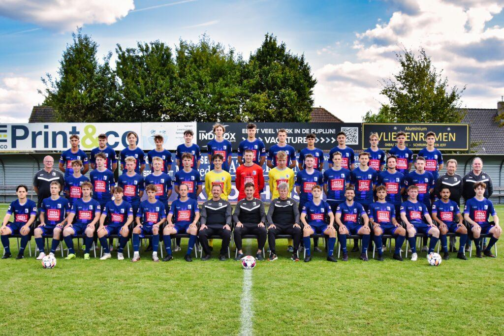

Seniors
De eerste ploeg speelt in 3de provinciale C. De beloften en PU21 vormen de laatste stap vanuit de jeugd.
- Eerste ploeg3de provinciale CT1 Filip Cornelis, T2 Andy Van Rysselberghe
- A-beloftenBeloftenreeks
- B-beloftenThuis op Beervelde, 15u00Training maandag en woensdag, 19u30 tot 21u15, Bosdreef
- PU21Thuis zaterdag 15u00, BeerveldeTraining maandag en woensdag, 19u30 tot 21u00, Bosdreef
- ZondagsreservenThuis zondag 10u00, Bosdreef